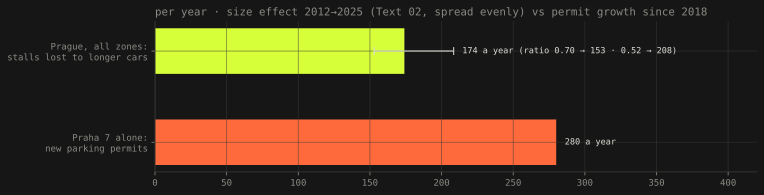

Text 03 · Prague · 23 September 2026 · next to Deník N
Parking III: count, not size
A day before this text, Deník N published an analysis arguing that Prague cannot build its way out of parking and that price, enforcement, transit and the end of parking minimums can1. It is about how many cars there are. Text 01 and Text 02 measured the other half, how much bigger they got. Put next to each other, the two halves have a scale, and the scale mostly agrees with Deník N.
- stalls lost to longer cars
- 174 a year all paid zones, 2012–2025 · 153–208
- new permits, Praha 7 alone
- 280 a year since 2018, Praha 7 data via Deník N
- 13 years of bigger cars
- 8 years of Praha 7's permit growth · 2 263 stalls
- a Kodiaq vs a Fabia
- +12 % kerb same permit, 1 200 Kč
What Deník N said
The piece, by Prokop Vodrážka, is written against the campaign: candidates promising P+R car parks, a city-wide zone, garages. Its four steps are to accept that more spaces will not help and reduce the number of cars on the street, mainly through price (Praha 7's survey puts the point where cars start to leave at 6 000 Kč a year, five times today's permit); to enforce the rules, without which any price is optional; to support other ways of moving; and to build a city that needs fewer cars, starting with the abolition of parking minimums1. Its central number is from Praha 7: since 2018 the district has issued on average 280 new residential permits a year, and it would have to build hundreds of stalls a year, at about a million crowns each, to keep up.
What it does not discuss is the size of the cars. That is the part this site has numbers for.
The size effect, on the same scale

Text 02 put the capacity lost to longer cars at 2 263 stalls between 2012 and 2025, in all of Prague's paid zones together, with a band of 1 988 to 2 7103. Spread over thirteen years, that is 174 stalls a year for the whole city. Praha 7, one district of the zone, adds 280 permits a year. Thirteen years of bigger cars across Prague are worth about eight years of permit growth in one district.
Two things make the comparison rougher than the bars. The size effect was not even: the new-car mass in Text 02 was flat to 2018 and rose afterwards, so the recent years are probably above 174 and the early ones below. And the 280 is Deník N's number, from Praha 7, not measured here; whether it is gross new permits or net growth the article does not say. Neither changes the order of magnitude. The size effect is real, and it is a fraction of the count effect, not a rival to it. That is the first step of Deník N's argument, with a number attached.
Perpendicular instead of parallel
Deník N mentions, and dismisses without numbers, a candidate's proposal to switch streets from parallel to perpendicular parking1. The length model of Text 01 is exactly the tool for this, because the two layouts ration different dimensions of the car2.
A parallel car uses its length plus a gap: 4.20 m for the average car parked in Prague today plus 0.82 m, about 5.0 m of kerb. A perpendicular car uses the width of its stall, 2.50 m in the Czech standard5. Per metre of kerb, perpendicular parks twice as many cars. Per square metre it does not: a parallel car takes 2.0 m of width over its 5.0 m of kerb, about 10 m², a perpendicular one 2.5 × 5.0 m, 12.5 m², before anyone counts the wider lane a car needs to turn into it.
So the switch does not create space; it converts three metres of street width, pavement or driving lane, into stalls. Where a street has those three metres spare, it works. Where it has them, they were usually already something else. This text did not measure the widths of the streets in Praha 3, so it cannot say how many streets qualify; it can say that the gain is never free and is never the doubling the kerb arithmetic suggests.
The layout also changes which growth hurts. On a parallel kerb, width does not enter capacity at all and the extra centimetres go into the lane; that was Text 01's main point. In a perpendicular stall, width is the whole constraint. A new car's body is about 1.82 m wide, 2.02 m with the mirrors out, so a 2.50 m stall leaves about 68 cm between neighbours to open two doors2. The switch would move Prague from the dimension that has grown least to the one where the margin is already thin.
Price, and what size does to it
Text 01 found that a resident permit costs 89 Kč per square metre of zone a year, the same for a Fabia and a Kodiaq2. At Deník N's 6 000 Kč it would be 444 Kč, and still the same for both.
A Fabia is 4.11 m long, a Kodiaq 4.70 m4. With the 0.82 m gap, the Kodiaq takes 12 % more kerb on a parallel street, and so pays 218 Kč per metre of kerb a year against the Fabia's 244: at a flat price, the longer car gets the cheaper metre. A permit priced by length, with the same average as today, would charge the Fabia about 1 180 Kč and the Kodiaq about 1 320. At 6 000 Kč the gap would be about 700 Kč a year.
That is fairer, and it is small. The difference between the two cars is a tenth of the price; the difference between today's price and the one Praha 7's survey says would move people is a factor of five. Pricing by length is a correction to the price, not a replacement for raising it, which is the same conclusion as fig. 1 in another unit: size is the second-order effect.
What was checked, and what was not
Checked: every number from Texts 01 and 02 is reused unchanged, from eea_cz.json and Text 01's run; the per-year figure and the per-kerb-metre arithmetic are in tools/parking3_figures.py and this text. Not checked, and taken from Deník N: the 280 permits a year, the 6 000 Kč threshold from PAQ Research's survey for Praha 7, and the cost of a stall in a garage. Not checked at all: the article's count of 1.36 million vehicles and its growth since 2010, which comes from registrations and so includes company and leasing cars registered at Prague addresses but not necessarily parked in Prague; the widths of the streets where perpendicular parking has been proposed; and everything in Deník N's steps two to four (enforcement, transit, parking minimums), which this series has no data on. The standard's stall dimensions are, as in Text 01, from secondary sources.
References
- Vodrážka, P. (2026): Populistické výkřiky parkování v Praze nevyřeší. Čtyři kroky ale mohou situaci skutečně zlepšit, Deník N, 22 September 2026 (paywalled). Source for the four steps, Praha 7's 280 permits a year since 2018 (from Praha 7), the 6 000 Kč threshold (PAQ Research for Praha 7) and the perpendicular-parking proposal in Praha 3.
- Šandová, B. (2026): How many parking spaces Prague lost to bigger cars (Text 01): the length model of capacity, the 0.82 m gap, the 13.5 m² of zone per stall and 89 Kč per m², new-car width of 2.02 m with mirrors (20 cm allowance on T&E's width without mirrors).
- Šandová, B. (2026): Parking II: the fleet, measured (Text 02): 2 263 stalls lost 2012→2025 (1 988–2 710), fleet length 4.098 → 4.195 m; data in eea_cz.json.
- Škoda Auto, technical data: Fabia (fourth generation, 2021) 4 108 mm; Kodiaq (first generation, 2016) 4 697 mm. The first-generation Kodiaq is used because it is the one in the fleet; the 2024 model is about 6 cm longer.
- ČSN 73 6056 (2011), via secondary sources as in Text 01: perpendicular stall 2.50 × 5.00 m, parallel 2.00 m wide.